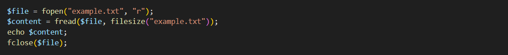
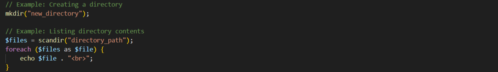
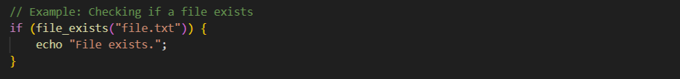

File Handling
File handling in PHP is the process of reading, writing, appending, and deleting files. It can be done using a variety of functions. There are a number of different ways to handle files in PHP. The most common method is to use the built-in functions fopen(), fread(), fwrite(), and fclose(). These functions allow you to open a file, read from it, write to it, and close it.
File Permissions
File permissions in PHP are essential for controlling who can access and manipulate files. Permissions include read, write, and execute permissions for the owner, group, and others.

File Operations
PHP provides various functions for working with files, including opening, reading, writing, copying, renaming, deleting, and closing files.
-
Opening and Reading a File : To open and read a file in PHP, you can use the fopen() function to open the file and fread() function to read its contents. Here's an example:
 -
Writing to a File : To write data to a file in PHP, you can use the fopen() function with the "w" mode to open the file for writing and the fwrite() function to write data. Here's an example:
 -
Renaming Files : To rename a file in PHP, you can use the rename() function. It takes the current file name and the new file name as arguments. Here's an example:
-
Deleting a File : To delete a file in PHP, you can use the unlink() function. It takes the file path as an argument. Here's an example:
File System Functions:
PHP offers a range of file system functions to interact with files and directories, including file_exists(), is_file(), is_dir(), and more.
Working On Directories:
PHP allows you to work with directories, create new directories, list directory contents, and navigate through the file system.